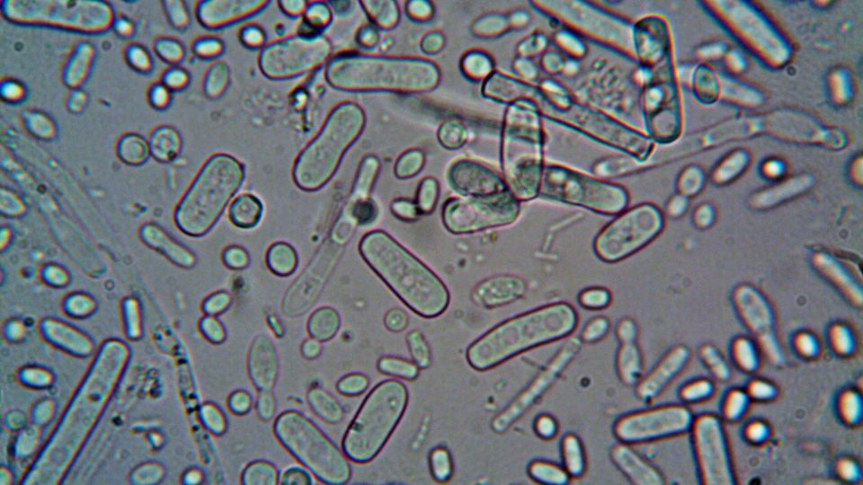
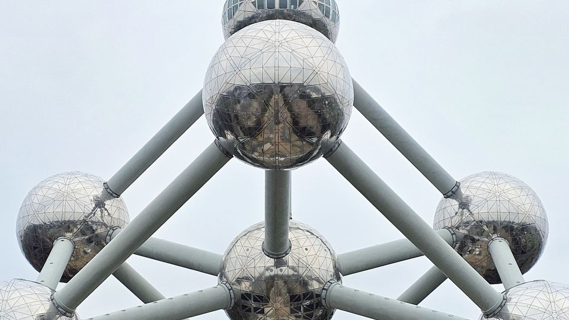
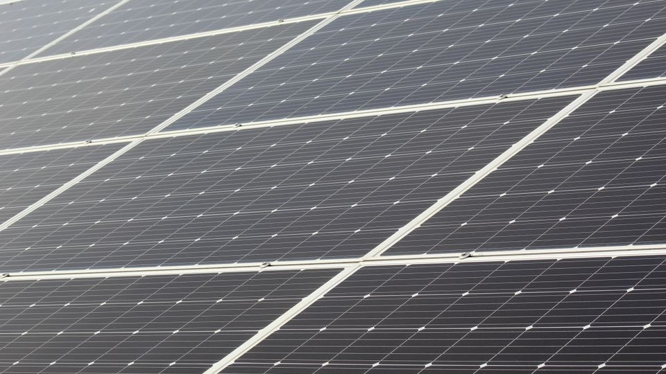
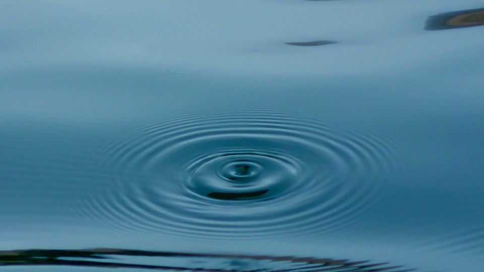
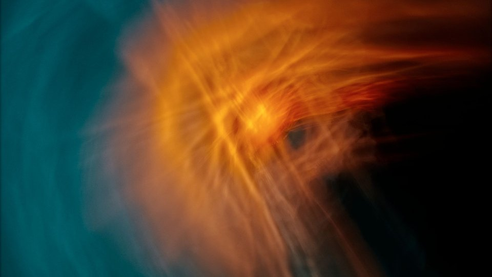
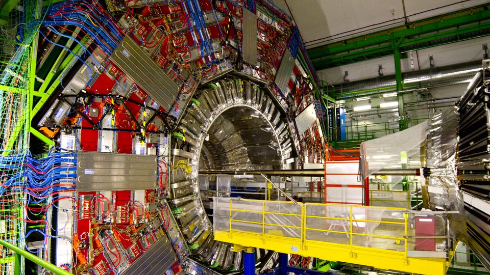

Kulová zrcadla
Zobrazování dutým a vypuklým zrcadlem, konstrukce obrazu, zobrazovací rovnice.
Otevřít →Zobrazování optickými soustavami: zrcadla, čočky a optické přístroje.
Zobrazování dutým a vypuklým zrcadlem, konstrukce obrazu, zobrazovací rovnice.
Otevřít →


Vlnové vlastnosti světla: ohyb, skládání vlnění a polarizace.
Spektrum elektromagnetického záření, tepelné záření, luminiscence a spektra látek.
Stavba atomu, kvantová fyzika, spektra, laser a elementární částice.








